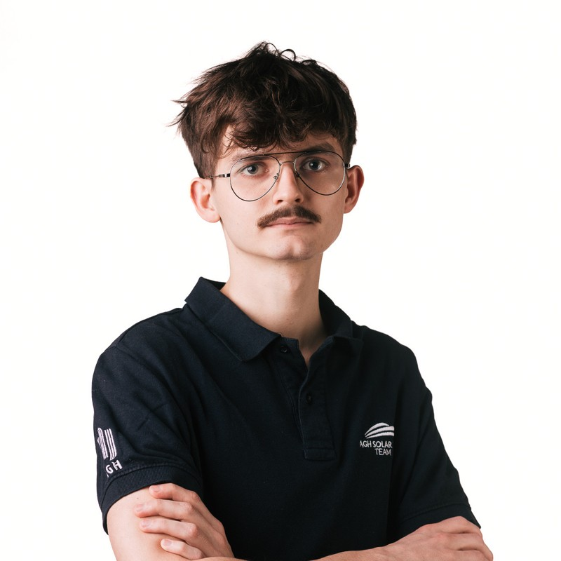

Cześć! 👋
Nazywam się Damian Brzana. Studiuję automatykę i robotykę na AGH, a prywatnie pasjonuję się systemami wbudowanymi, elektroniką, programowaniem niskopoziomowym (głównie STM32), drukiem 3D oraz jazdą na rolkach aggressive.
W wolnym czasie buduję prototypy, analizuję systemy dynamiczne, projektuję PCB i biorę udział w projektach badawczo-rozwojowych. Lubię też zgłębiać tematykę sterowania, filtrów Kalmana, systemów ROS oraz symulacji w Simulinku.
Na tej stronie możesz znaleźć moje projekty, publikacje i informacje kontaktowe.